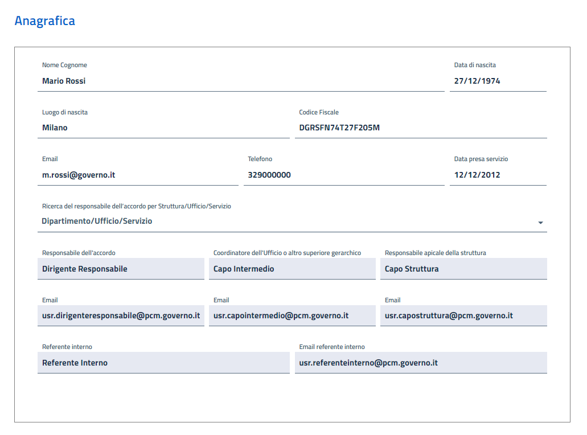
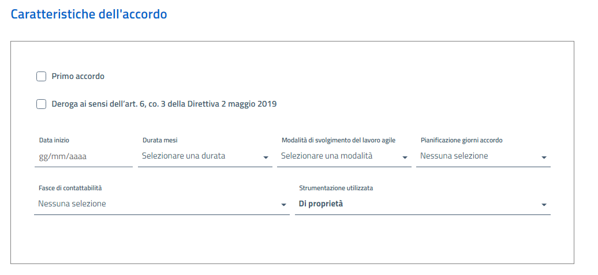

Presidenza del Consiglio dei Ministri
SEGRETARIATO GENERALE
DIPARTIMENTO PER I SERVIZI STRUMENTALI
UFFICIO INFORMATICA E TELEMATICA
Lavoro Agile
Sommario
- Introduzione
- Accesso all’applicativo web
- 1. Utente
- 1.2 Nuovo Accordo
- 1.2.1 Anagrafica
- 1.2.2 Criteri di priorità
- 1.2.3 Caratteristiche dell'accordo
- 1.2.4 Organizzazione del lavoro
- 1.2.5 Giustificato motivo di recesso
- 1.2.6 Informative
- 1.2.7 Formazione
- 1.2.8 Stato della richiesta
- 1.3 Invio Proposta
- 1.4 Modifica Proposta
- 1.5 Valutazione accordi
- 1.6 Ricerca Accordi
- 2. Responsabile Accordo
- 2.1 Ricerca accordi
- 2.1.1 Approva
- 2.1.2 Rifiuta
- 2.1.3 Richiesta modifica
- 2.1.4 Storico
- 2.1.5 Indietro
- 2.1.6 Operazioni Massive
- 2.1.7 Sottoscrizione Accordo
- 2.1.8 Rinnovo
- 2.1.9 Rinnovo
- 2.2 Valutazione accordi
- 3. Capo Intermedio
- 4. Capo Struttura
- 5. Segreteria Tecnica
- 6. Referente Interno
Obiettivo del presente documento è fornire indicazioni necessarie al corretto utilizzo dell’applicativo web "Lavoro Agile", strumento attraverso il quale la Presidenza del Consiglio dei Ministri mette a disposizione di tutti i dipendenti la possibilità di inserire la propria proposta di accordo. Il presente manuale è destinato agli utilizzatori dell’applicativo, ed è suddiviso in base ai principali attori del processo per la richiesta dell’accordo di lavoro agile.
- Utente (Proponente): è la persona in servizio presso la PCM che intende attivare la modalità di lavoro agile.
- Responsabile Accordo: è il superiore gerarchico che definisce, d’intesa con il proponente, l’accordo di lavoro agile e lo sottoscrive al termine del processo di approvazione e verifica gli esiti delle attività prestate in modalità agile.
- Capo Intermedio: Se il capo diretto del dirigente responsabile non coincide con il Capo della Struttura, l’accordo è trasmesso all’approvazione del Capo della Struttura per il tramite del Capo intermedio, previa validazione.
- Capo Struttura: è il responsabile della struttura della PCM all’interno della quale prestano servizio il proponente e il dirigente responsabile dell’accordo. Approva definitivamente, anche in relazione alle esigenze organizzative e funzionali della struttura l’accordo di lavoro agile.
- Segreteria Tecnica: supporta le strutture della Presidenza del Consiglio dei ministri e gli attori nell’attuazione del lavoro agile
- Referente Interno: è una figura presente in ciascuna struttura, individuata dal capo della struttura stessa, per fare da raccordo tra i lavoratori agili, i dirigenti responsabili degli accordi e la segreteria tecnica per il lavoro agile.
È possibile accedere all’applicativo digitando il seguente indirizzo URL: http://lavoroagile.pcm.it, si verrà indirizzati alla Home Page del Portale Lavoro Agile da cui sarà possibile accedere inserendo le proprie credenziali di dominio.
1. Utente
L’Utente (Proponente) è la persona in servizio presso la PCM che intende attivare la modalità di lavoro agile. Selezionando nella voce "Ruolo con cui operare" l’opzione "Utente" è possibile eseguire due operazioni. Inserire il Nuovo accordo e la Ricerca accordi.
1.2 Nuovo Accordo
Selezionando la voce Nuovo accordo si aprirà una nuova pagina che permetterà all’utente di compilare l’accordo da proporre. La pagina è composta dalle seguenti sezioni.
1.2.1 AnagraficaLa prima parte della scheda, inerente ai dati anagrafici, verrà compilata in automatico dall’applicativo, inserendo anche i dati del proprio Capo struttura, il Capo intermedio, Dirigente Responsabile e il referente interno.

1.2.2 Criteri di prioritàIn questa sezione si può indicare l’eventuale presenza dei criteri di priorità di accesso al lavoro agile indicati all’articolo 8, comma 8, della direttiva del SG.
1.2.3 Caratteristiche dell'accordo
Se è il primo accordo che si propone selezionare la voce "Primo accordo".

Inserire la Data inizio, indicare la Durata mesi (da 1 a 6 mesi). Per la Modalità, selezionare una delle tre proposte:
- Un giorno a settimana
- Due giorni a settimana
- Giornate prescelte
| Scegliendo l’opzione "Giornate prescelte" si possono selezionare al massimo due giorni per settimana. Si può ampliare il numero delle giornate lavorative soltanto per i motivi descritti nell’art. 6, co. 3 della Direttiva 2 maggio 2019. In questo caso selezionare la voce "Deroga ai sensi dell’art. 6, co. 3 della Direttiva 2 maggio 2019". |
Indicare almeno un minimo di tre Fasce di contattabilità per ciascun giorno (almeno tre). Nell’ultimo campo selezionare se la strumentazione utilizzata per svolgere le attività è di proprietà o dell’amministrazione.
1.2.4 Organizzazione del lavoroIn questa sezione si devono indicare le attività da svolgere in modalità agile. Sarà possibile inserire fino a un massimo di 5 attività, in cui sarà declinato l’oggetto dell’accordo. L’applicativo presenta, quindi, 5 blocchi attività-risultati-indicatori-target, che sono compilati dal proponente e concordati con il dirigente responsabile. La compilazione di almeno uno dei cinque blocchi è obbligatoria.
Compilati tutti i campi, premere il pulsante Aggiungi. Verrà creata una scheda sottostante con i dati dell’attività. In caso di errori la nuova scheda può essere eliminata premendo il pulsante Elimina. Operativamente, il proponente deve indicare in primo luogo fino a massimo 5 "attività da svolgere" procedendo quindi a definire max 5 risultati da conseguire. Successivamente, per ciascuna coppia attività/risultato associata, definirà un indicatore e il relativo target. Coerentemente con il modello di accordo, in aggiunta alle attività che verranno descritte e personalizzate all’interno dell’accordo stesso, nelle giornate di lavoro agile potrà comunque essere sempre effettuata attività di formazione e potranno essere assegnate attività non programmabili. Pertanto, in tutti gli accordi saranno presenti ulteriori 2 attività, per le quali non occorrerà indicare risultati attesi, indicatori e target. Queste due attività sono proposte dal sistema, e sono immodificabili e uguali per tutti i proponenti, attività formative e altre attività non programmabili Gli indicatori di misurazione servono per valutare il raggiungimento del risultato dell’attività proposta. Dopo aver indicato la denominazione dell’indicatore, selezionare la Tipologia Indicatore che può essere un numero assoluto, una percentuale, una data o un testo e inserire l’Operatore logico corrispondente alla tipologia selezionata. La compilazione di questi campi serve per valutare se il risultato atteso è stato raggiunto.
1.2.5 Giustificato motivo di recessoNel capo libero si potrà aggiungere eventuali ulteriori motivi di recesso.

In questa sezione sono presenti tutte le informative che il proponente dovrà leggere e sottoscrivere (ad eccezione dell’attestazione di aver effettuato la formazione propedeutica che può avvenire anche successivamente, ma comunque prima della sottoscrizione), al fine di poter inviare l’accordo al dirigente responsabile.
1.2.7 FormazioneIl proponente deve dichiarare di aver frequentato moduli formativi specifici in materia di lavoro agile, anche con riferimento ai profili di sicurezza informatica e di salute e sicurezza sul lavoro. Per chi non ha mai frequentato un corso è disponibile il link al modulo formativo.
1.2.8 Stato della richiestaLo stato della richiesta è in Bozza, per salvarla premere sul pulsante Salva. É possibile predisporre più di una bozza di proposta, ma una sola potrà essere inviata al dirigente responsabile. Se è presente un errore o alcuni campi non sono stati compilati appare il seguente messaggio di errore.
| Scorrere la bozza per individuare il suggerimento contrassegnato con una scritta rossa. Inserire o correggere l’errore e riprovare a salvare la bozza. |
Dopo aver salvato correttamente la bozza di proposta si aprirà una nuova pagina dove sono presenti, con i dati riepilogativi, tutti gli accordi presentati.
1.3 Invio Proposta
Premendo sulla voce Vai al dettaglio, si aprirà una schermata con il dettaglio dell’accordo e con i seguenti pulsanti. Oltre ad avere la possibilità di aggiornare ulteriormente la bozza dell’accorso per poi salvarla nuovamente, è possibile eliminarla fino a che questa si trova nello stato di "bozza", premendo il tasto Elimina. Il pulsante Storico è utilizzabile dopo aver sottomesso la proposta.
Quando il proponente ha completato la predisposizione della bozza di proposta e ritiene di non dover applicare ulteriori modifiche, la invia al dirigente responsabile premendo il tasto Trasmetti. Da quel momento la proposta non è più in bozza e non può più essere modificata autonomamente dal proponente. Al momento dell’invio l’applicativo effettua alcuni controlli che ne impediscono eventualmente il passaggio di stato:
- non è possibile inviare più di una proposta di accordo;
- non è possibile inviare una proposta di accordo che abbia una data di inizio antecedente alla data fine di eventuale un accordo non ancora cessato.
1.4 Modifica Proposta
Se c’è una parziale intesa sull’accordo, il dirigente responsabile può richiedere la modifica della proposta. Le modifiche potranno essere effettuate solo dal proponente, sia nel caso in cui sia egli stesso a richiederle, sia nel caso in cui siano proposte dai superiori gerarchici.
| Il proponente, oltre a ricevere una mail che segnala la richiesta di integrazione, vedrà dalla sua home, un numero sulla voce "Ricerca accordi". |
Sarà cura del proponente applicare le modifiche richieste e sottoporre nuovamente l’accordo all’intero ciclo approvativo. Il proponente applica le modifiche segnalategli e risottomette le nuove informazioni all’approvazione. Questo è possibile entrando nei dettagli dell’accordo attivo, e dopo aver apportato le modifiche richieste, premere il tasto Invia modifiche.
| È possibile visualizzare lo storico dell’accordo premendo il tasto Storico. Nel popup che si aprirà è possibile visualizzare oltre le date inerenti all’iter della richiesta e lo stato dell’accordo proposto, anche le note aggiunte dal superiore gerarchico, ad integrazione della proposta inviata. |
Ai fini della valutazione della prestazione resa in lavoro agile, il lavoratore compila una scheda di monitoraggio finale. Premendo il tasto verde "Richiedi Valutazione" si aprirà la seguente scheda:
Accanto al calcolo automatico delle % di tempo dedicato alle attività svolte, specifica il livello di raggiungimento del target programmato in sede di accordo per ciascuna delle attività descritte (ad eccezione delle attività formative e di quelle non programmabili). Nell’ambito di tale rendicontazione finale il lavoratore può inserire anche eventuali osservazioni e/o evidenze a supporto della valutazione del dirigente responsabile. Qualora il dipendente intenda rinnovare l’accordo, la scheda di monitoraggio finale dovrà essere trasmessa al dirigente entro la fine del mese antecedente la conclusione dell’accordo, salve particolari esigenze concordate tra le parti. Dopo averla compilata si dovrà premere il pulsante marrone "Sottoponi Valutazione Accordo".
1.6 Ricerca AccordiL’opzione "Ricerca Accordi" consente di effettuate la ricerca degli accordi stipulati. Sono presenti diverse opzioni di ricerca. Può avvenire sia inserendo il CODICE ACCORDO o per nominativo del PROPONENTE e anche per DATA INIZIO. Dopo aver compilato i campi premere il tasto Aggiorna risultati.
Si può effettuare la ricerca anche per STATO dell’accordo. Basta selezionare la voce desiderata e premere il pulsante Aggiorna risultati.
1.6.1 Sottoscrizione accordo
Nel caso in cui l’iter di approvazione si sia concluso positivamente, il dirigente responsabile e il proponente procedono alla sottoscrizione in modalità digitale dell’accordo. La sottoscrizione non è consentita se prima il dipendente non ha attestato di aver svolto la formazione propedeutica prevista. In questo caso l’utente aprendo la proposta d’accordo dovrà preme il tasto Sottoscrivi.
In caso di rinnovo dell’accordo, sarà presente nella propria homepage la voce Dettaglio accordo di rinnovo. Entrando nel Dettaglio accordo di rinnovo è possibile eseguire le seguenti operazioni:
1.6.2 Recesso
Con adeguato preavviso, pari ad almeno trenta giorni lavorativi e fornendo specifica motivazione, è possibile richiedere, anche unilateralmente, di recedere dall’accordo prima della sua naturale scadenza. Dopo aver premuto il pulsante "Recedi" si aprirà un popup dove sarà possibile inserire le motivazioni e la data che sarà di almeno trenta giorni dopo la data in cui si richiede di recedere dall’accodo.
2. Responsabile Accordo
Il responsabile dell’accordo è il superiore gerarchico che definisce, d’intesa con il proponente, l’accordo di lavoro agile e lo sottoscrive al termine del processo di approvazione e verifica gli esiti delle attività prestate in modalità agile. Selezionando nel menu "Ruolo con cui operare" l’opzione "Responsabile Accordo" si accede con il profilo di "responsabile dell’accordo" abilitando le seguenti operazioni. La Ricerca accordi, la Valutazione accordi e il Cruscotti di Monitoraggio.
2.1 Ricerca accordi
Entrando nella "Ricerca accordi" il responsabile dell’accordo visualizzerà tutte le richieste pervenute e filtrarle in base alle varie modalità di ricerca che l’applicativo offre.
Selezionando la singola proposta e digitando il campo "Vai ai dettagli" il responsabile ha la possibilità di effettuare le seguenti operazioni:
Per ogni operazione si aprirà un popup, dove è possibile inserire eventuali note e il tasto con l’opzione scelta.
2.1.1 ApprovaPremendo il tasto approva, il responsabile dell’accordo, approva l’accordo e una mail automatizzata avverte il proponente dell’avvenuta sottomissione al capo struttura (o al capo intermedio). Il responsabile dell’accordo ha la possibilità di inserire delle note ad integrazione della sua decisione positiva.
2.1.2 Rifiuta
Nel caso di rifiuto dell’accordo, il superiore gerarchico è tenuto a motivare il suo diniego inserendo le note nell’apposito campo.
2.1.3 Richiesta modifica
Il responsabile può richiedere delle modifiche o delle integrazioni dell’accordo. Ha la possibilità di indicare le modifiche da apportare nel campo note. La proposta ritorna al proponente per le modifiche/integrazioni richieste e poi al dirigente responsabile per la definizione dell’accordo.
2.1.4 Storico
| Si aprirà un popup contente le date inerenti all’iter della richiesta e lo stato dell’accordo proposto e le note aggiunte dal superiore gerarchico, ad integrazione della proposta inviata. |
Premendo il pulsante si ritorna nella schermata di ricerca degli accordi.
2.1.6 Operazioni MassiveÈ possibile effettuare delle operazioni massive. Selezionando più accordi e premendo il pulsante verde in alto a destra della schermata "Operazioni Massive", si aprirà un popup che riporta il codice della proposta di accordo, il nominativo del proponente e la data di inizio di tutte le proposte selezionate.
Il responsabile dell’accordo ha la possibilità di approvare, rifiutare o richiedere una modifica per tutti gli accordi selezionati. Non è possibile effettuare un’azione massiva, quando tra gli accordi selezionati c'è almeno una proposta non rinnovabile (meno di due settimane dalla scadenza o con valutazione negativa o assente). Inoltre, tutti gli accordi selezionati devono essere in uno stato valido (Da approvare/Da sottoscrivere) e nello stesso stato.
L’accordo di lavoro agile può essere rinnovato dal dirigente responsabile, d’intesa con il dipendente interessato, per un periodo comunque non superiore, per ogni rinnovo, a sei mesi.
2.1.7 Sottoscrizione AccordoDopo che la proposta di accordo è stata approvata dal Capo Struttura e dal Capo Intermedio (se presente nella struttura), il responsabile dell’accordo ha la possibilità di sottoscrivere l’’accordo, premendo il tasto Sottoscrivi.
Una volta sottoscritto è possibile scaricare la copia dell’accordo in formato pdf.
2.1.8 Rinnovo
Non è possibile rinnovare l’accordo per i seguenti motivi: 1. manca meno di un mese alla scadenza. 2. per valutazione negativa. 3. è stato richiesto un recesso. 4. è stato richiesto già un rinnovo.
2.1.9 RecessoEsigenze organizzative o personali, possono rendere necessaria la conclusione anticipata dell’accordo. Il dirigente responsabile può, con adeguato preavviso, pari ad almeno trenta giorni lavorativi e fornendo specifica motivazione, recedere dall’accordo prima della sua naturale scadenza. In tal caso, il soggetto che riceve la richiesta di conclusione anticipata dell’accordo dovrà prendere atto della comunicazione del recesso.
Il dirigente responsabile in accordo può richiedere il recesso dell’accordo premendo sul tasto Recedi. Si aprirà un popup dove verranno inserite le motivazioni del recesso. In automatico l’applicativo inserirà una data di trenta giorni dalla data di recesso.
2.2 Valutazione accordi
Alla scadenza dell’accordo, il dirigente responsabile valuta la performance resa dal lavoratore agile durante le giornate di smart working. Tale valutazione costituisce, inoltre, condizione necessaria per l’eventuale rinnovo dell’accordo.
 |
Dalla home page selezionare la voce "Valutazione accordi"; verranno visualizzati tutti gli accordi che potranno essere valutati. Selezionare la voce "Valuta accordo" per aprire la seguente schermata: |
Oltre a riportare un quadro di sintesi dell’accordo con la rendicontazione, le attività dell’accordo e il target raggiunto con le eventuali note del dipendente, il responsabile per confermare la valutazione dovrà selezionare la voce "Sulla base delle informazioni …….. " e inserire le eventuali note, per poi premere il pulsante marrone in basso a destra "Conferma Valutazione Accordo".
3. Capo IntermedioIn alcune situazioni può esserci un ulteriore attore, al quale sono sottoposti gli accordi prima della trasmissione al Capo della Struttura: il Capo intermedio. Se il capo diretto del dirigente responsabile non coincide con il Capo della Struttura, l’accordo è trasmesso all’approvazione del Capo della Struttura per il tramite del Capo intermedio, previa validazione.
3.1 Ricerca accordi
Anche per il Capo Intermedio, nella "Ricerca accordi" visualizzerà tutte le richieste pervenute e potrà filtrarle in base alle varie modalità di ricerca che l’applicativo offre.
Selezionando la singola proposta e digitando il campo "Vai ai dettagli" il capo intermedio ha la possibilità di effettuare le seguenti operazioni:
Le funzioni sono quelle già descritte nel paragrafo del "Responsabile Accordo".
4. Capo StrutturaSe il capo della struttura è anche il responsabile dell’accordo, dopo l’approvazione può immediatamente sottoscrivere l’accordo.
4.1 Ricerca accordiIl Capo Struttura, nella "Ricerca accordi" visualizzerà tutte le richieste pervenute e potrà filtrarle in base alle varie modalità di ricerca che l’applicativo offre.
Selezionando la singola proposta e digitando il campo "Vai ai dettagli" il capo struttura ha la possibilità di effettuare le seguenti operazioni:
Le funzioni sono quelle già descritte nel paragrafo del "Responsabile Accordo".
5. Segreteria TecnicaLa Segreteria tecnica supporta le strutture della Presidenza del Consiglio dei ministri e gli attori nell’attuazione del lavoro agile.
5.1 Ricerca accordi
La Segreteria Tecnica ha la possibilità di consultare, in modalità “visualizzazione”, tutte le proposte e gli accordi presenti nell’applicativo inerente al proprio ufficio. Può esaminare e validare gli accordi presentati per la prima volta e segnalare al dirigente responsabile dell’accordo eventuali proposte di modifica. Per ogni proposta di accordo, la Segreteria Tecnica, avrà a disposizione quattro campi da compilare che potrà valorizzare in qualsiasi momento del ciclo approvativo:
- Visto Segreteria Tecnica: selezionare il flag per riscontrare l’avvenuta visione della richiesta.
- Note Segreteria Tecnica: in questo campo è possibile inserite le note interne visibile solo dalla Segreteria Tecnica;
- Note condivise: in questo campo è possibile inserire delle annotazioni che saranno visibili a tutti gli attori coinvolti;
- Invio notifiche note condivise: selezionando il flag l’applicativo invierà una mail di notifica a tutti gli attori coinvolti (solo se sono presenti delle note condivise).
| La segreteria tecnica ha la possibilità di eliminarle le proposte di accordo che si trovano in stato di Bozza. |
6. Referente Interno
Il Referente interno è una figura presente in ciascuna struttura, individuata dal capo della struttura stessa, per fare da raccordo tra i lavoratori agili, i dirigenti responsabili degli accordi e la segreteria tecnica per il lavoro agile.
6.1 Ricerca accordi
Accedendo a tutti gli accordi della struttura per cui è referente, supporta attivamente gli attori nella stesura degli accordi. Aprendo una proposta di accordo, potrà inserire delle note nel capo di testo “Note Referente Interno” e visualizzare le eventuali note inserite dalla Segreteria Tecnica.
| Il referente interno ha la possibilità di eliminarle le proposte di accordo che si trovano in stato di Bozza. |